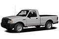
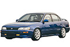
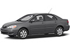
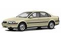

| BMW 1-series (E81/E82/E87/E88; 2004-2013)…>> Fuse box diagram (location and assignment of electrical fuses and relays) for BMW 1-series (116i, 116d, 118i, 118d, 120i, 120d, 123d, 130i) (2004, 2005, 2006, 2007, 2008, 2009, 2010, 2011, 2012, 2013). |
| BMW 1-Series (F20/F21; 2012-2017)…>> Fuse box diagram (location and assignment of electrical fuses and relays) for BMW 1-Series (F20/F21; 114i, 116i, 118i, 120i, 125i, 114d, 116d, 118d, 120d, 125d) 2012, 2013, 2014, 2015, 2016, 2017. |
| BMW 3-Series (E46; 1998-2006)…>> Fuse box diagram (location and assignment of electrical fuses and relays) for BMW 3-Series E46 (316i, 318i, 318d, 320i, 320d, 323i, 325i, 328i, 330i, 330d) 1998, 1999, 2000, 2001, 2002, 2003, 2004, 2005, 2006. |
| BMW 3-Series (E90/E91/E92/E93; 2005-2013)…>> Fuse box diagram (location and assignment of electrical fuses and relays) for BMW 3-Series (316i, 316d, 318i, 318d, 320i, 320d, 232i, 325i, 325d, 328i, 330i, 330d, 335i, 335d) 2005, 2006, 2007, 2008, 2009, 2010, 2011, 2012, 2013. |
| BMW 3-Series (F30/F31/F34; 2012-2018)…>> Fuse box diagram (location and assignment of electrical fuses and relays) for BMW 3-Series (F30/F31/F34) (316i, 318i, 320i, 328i, 330i, 335i, 340i, 316d, 318d, 320d, 328d, 330d, 335d) 2012, 2013, 2014, 2015, 2016, 2017, 2018. |
| BMW 5-Series (E39; 1996-2003)…>> Fuse box diagram (location and assignment of electrical fuses and relays) for BMW 5-Series (E39; 1996-2003) (520i, 520d, 523i, 525d, 525td, 525tds, 528i, 530i, 530d, 535i, 540i) 1996, 1997, 1998, 1999, 2000, 2001, 2002, 2003. |
| BMW 5-Series (E60/E61; 2003-2010)…>> Fuse box diagram (location and assignment of electrical fuses and relays) for BMW 5-Series (520i, 520d, 523i, 525i, 525d, 528i, 530i, 530d, 535i, 535d, 540i, 545i, 550i) (E60/E61; 2003, 2004, 2005, 2006, 2007, 2008, 2009, 2010). |
| BMW 5-Series (F10/F11/F07/F18; 2011-2017)…>> Fuse box diagram (location and assignment of electrical fuses and relays) for BMW 5-Series (F10/F11/F07/F18; 2011, 2012, 2013, 2014, 2015, 2016, 2017) (518d, 520i, 520d, 523i, 525d, 528i, 530i, 530d, 535i, 535d, 550i). |
| BMW 6-Series (E63/E64; 2004-2010)…>> Fuse box diagrams (location and assignment of electrical fuses) BMW 6-Series 630i, 635d, 645Ci, 650i, M6 (E63/E64; 2003, 2004, 2005, 2006, 2007, 2008, 2009, 2010). |
| BMW 7-Series (E65/E66/E67/E68; 2002-2008)…>> Fuse box diagram (location and assignment of electrical fuses and relays) for BMW 7-Series (2002, 2003, 2004, 2005, 2006, 2007, 2008) (730i, 730d, 735i, 740i, 740d, 745i, 745d, 750i, 760i). |
| BMW 7-Series (F01/F02; 2009-2016)…>> Fuse box diagram (location and assignment of electrical fuses and relays) for BMW 7-Series (F01/F02; 2009, 2010, 2011, 2012, 2013, 2014, 2015, 2016) (730i/Li, 740i, 750i, 760i, 730d, 740d, 750d). |
| BMW i3 (2014-2019-..)…>> Fuse box diagram (location and assignment of electrical fuses and relays) for BMW i3 (2014, 2015, 2016, 2017, 2018, 2019-..). |

| BMW X1 (E84; 2010-2015)…>> Fuse box diagram (location and assignment of electrical fuses and relays) for BMW X1 (E84; 2010, 2011, 2012, 2013, 2014, 2015). |
| BMW X3 (E83; 2004-2010)…>> Fuse box diagram (location and assignment of electrical fuses and relays) for BMW X3 (E83; 2004, 2005, 2006, 2007, 2008, 2009, 2010). |
| BMW X3 (F25; 2011-2017)…>> Fuse box diagram (location and assignment of electrical fuses and relays) for BMW X3 (F25; 2011, 2012, 2013, 2014, 2015, 2016, 2017). |
| BMW X5 (E53; 2000-2006)…>> Fuse box diagram (location and assignment of electrical fuses and relays) for BMW X5 (E53; 2000, 2001, 2002, 2003, 2004, 2005, 2006). |
| BMW X5 (E70; 2007-2013)…>> Fuse box diagram (location and assignment of electrical fuses and relays) for BMW X5 (E70; 2007, 2008, 2009, 2010, 2011, 2012, 2013). |
| BMW X5 (F15; 2014-2018)…>> Fuse box diagram (location and assignment of electrical fuses and relays) for BMW X5 (F15; 2014, 2015, 2016, 2017, 2018). |
| BMW X5 (G05; 2019-2022..)…>> Fuse box diagrams (location and assignment of electrical fuses and relays) BMW X5 (G05; 2019, 2020, 2021, 2022..) |
| BMW X6 (E71; 2009-2014)…>> Fuse box diagram (location and assignment of electrical fuses and relays) for BMW X6 (E71; 2009, 2010, 2011, 2012, 2013, 2014). |
| BMW X7 (G07; 2019-2022..)…>> Fuse box diagrams (location and assignment of electrical fuses) BMW X7 (G07; 2019, 2020, 2021, 2022..) |
| BMW Z3 (E36; 1996-2002)…>> Fuse box diagrams (location and assignment of electrical fuses and relays) BMW Z3 (E36; 1996, 1997, 1998, 1999, 2000, 2001, 2002). |
| BMW Z4 (E85/E86; 2003-2008)…>> Fuse box diagrams (location and assignment of electrical fuses) BMW Z4 (E85/E86; 2002, 2003, 2004, 2005, 2006, 2007, 2008). |
| Chevrolet Aveo (2007-2011)…>> Fuse box diagram (location and assignment of electrical fuses and relays) for Chevrolet (Chevy) Aveo (2007, 2008, 2009, 2010, 2011). |
| Chevrolet Aveo (2012-2018)…>> Fuse box diagram (location and assignment of electrical fuses and relays) for Chevrolet (Chevy) Aveo (2012, 2013, 2014, 2015, 2016, 2017, 2018, 2019, 2020). |
| Chevrolet Blazer (1996-2005)…>> Fuse box diagram (location and assignment of electrical fuses and relays) Chevrolet (Chevy) Blazer (1996, 1997, 1998, 1999, 2000, 2001, 2002, 2003, 2004, 2005) |
| Chevrolet Blazer (2019-2022)…>> Fuse box diagram (location and assignment of electrical fuses and relays) for All-New Chevrolet (Chevy) Blazer (2019, 2020, 2021, 2022..) |
| Chevrolet Captiva Sport (2012-2016)…>> Fuse box diagram (location and assignment of electrical fuses and relays) for Chevrolet (Chevy) Captiva Sport (2012, 2013, 2014, 2015, 2016). |
| Chevrolet Cruze (J300; 2008-2016)…>> Fuse box diagram (location and assignment of electrical fuses and relays) for Chevrolet (Chevy) Cruze (J300; 2008, 2009, 2010, 2011, 2012, 2013, 2014, 2015, 2016). |
| Chevrolet Cruze (J400; 2016-2019..)…>> Fuse box diagram (location and assignment of electrical fuses and relays) for Chevrolet Cruze (J400; 2016, 2017, 2018, 2019..) |
| Chevrolet Equinox (2005-2009)…>> Fuse box diagram (location and assignment of electrical fuses and relays) for Chevrolet (Chevy) Equinox (2005, 2006, 2007, 2008, 2009). |
| Chevrolet Equinox (2010-2017)…>> Fuse box diagram (location and assignment of electrical fuses and relays) for Chevrolet (Chevy) Equinox (2010, 2011, 2012, 2013, 2014, 2015, 2016, 2017). |
| Chevrolet Equinox (2018-2022)…>> Fuse box diagram (location and assignment of electrical fuses and relays) for Chevrolet (Chevy) Equinox (2018, 2019, 2020, 2021, 2022). |
| Chevrolet Orlando (J309; 2011-2018)…>> Fuse box diagram (location and assignment of electrical fuses and relays) for Chevrolet (Chevy) Orlando (J309; 2011, 2012, 2013, 2014, 2015, 2016, 2017, 2018). |
| Chevrolet Sonic / Aveo (2012-2020)…>> Fuse box diagram (location and assignment of electrical fuses and relays) for Chevrolet (Chevy) Sonic / Aveo (2012, 2013, 2014, 2015, 2016, 2017, 2018, 2019, 2020). |
| Chevrolet Tracker (1993-1998)…>> Fuse box diagram (location and assignment of electrical fuses) for Chevrolet (Chevy) Tracker / Vitara / Geo Tracker (1993, 1994, 1995, 1996, 1997, 1998). |
| Chevrolet Tracker (1999-2004)…>> Fuse box diagram (location and assignment of electrical fuses and relays) for Chevrolet (Chevy) Tracker (1999, 2000, 2001, 2002, 2003, 2004). |
| Chevrolet TrailBlazer (2002-2009)…>> Fuse box diagram (location and assignment of electrical fuses and relays) for Chevrolet (Chevy) TrailBlazer (2002, 2003, 2004, 2005, 2006, 2007, 2008, 2009). |
| Chevrolet TrailBlazer (2020-2022)…>> Fuse box diagrams (location and assignment of electrical fuses and relays) Chevrolet TrailBlazer (2020, 2021, 2022..). |
| Chevrolet Traverse (2009-2017)…>> Fuse box diagram (location and assignment of electrical fuses and relays) for Chevrolet (Chevy) Traverse (2009, 2010, 2011, 2012, 2013, 2014, 2015, 2016, 2017). |
| Chevrolet Traverse (2018-2022)…>> Fuse box diagram (location and assignment of electrical fuses and relays) for Chevrolet (Chevy) Traverse (2018, 2019, 2020, 2021, 2022). |
| Chevrolet Trax (2013-2017)…>> Fuse box diagram (location and assignment of electrical fuses and relays) for Chevrolet (Chevy) Trax / Tracker (2013, 2014, 2015, 2016, 2017). |
| Chevrolet Trax (2018-2022)…>> Fuse box diagrams (location and assignment of electrical fuses and relays) Chevrolet (Chevy) Trax (2018, 2019, 2020, 2021, 2022). |
| Chevrolet Volt (2011-2015)…>> Fuse box diagram (location and assignment of electrical fuses and relays) for Chevrolet (Chevy) Volt (2011, 2012, 2013, 2014, 2015). |
| Chevrolet Volt (2016-2019..)…>> Fuse box diagram (location and assignment of electrical fuses and relays) for Chevrolet (Chevy) Volt (2016, 2017, 2018, 2019-..) |
| Ford EcoSport (2013-2017)…>> Fuse box diagram (location and assignment of electrical fuses and relays) for Ford EcoSport (2013, 2014, 2015, 2016, 2017) |
| Ford EcoSport (2018-2021)…>> Fuse box diagram (location and assignment of electrical fuses and relays) for Ford EcoSport (2018, 2019, 2020, 2021). |
| Ford Escape (2001-2004)…>> Fuse box diagram (location and assignment of electrical fuses and relays) for Ford Escape (2001, 2002, 2003, 2004). |
| Ford Escape (2005-2007)…>> Fuse box diagram (location and assignment of electrical fuses and relays) for Ford Escape (2005, 2006, 2007). |
| Ford Escape (2008-2012)…>> Fuse box diagram (location and assignment of electrical fuses and relay) for Ford Escape (2008, 2009, 2010, 2011, 2012). |
| Ford Escape (2013-2019)…>> Fuse box diagram (location and assignment of electrical fuses and relays) for Ford Escape (Kuga) (2013, 2014, 2015, 2016, 2017, 2019). |
| Ford Escape Hybrid (2011-2012)…>> Fuse box diagram (location and assignment of electrical fuses and relays) for Ford Escape Hybrid (2011, 2012). |
| Ford Escape (2020-2022..)…>> Fuse box diagrams (location and assignment of electrical fuses and relays) Ford Escape (2020, 2021, 2022..) |
| Ford Everest (2015-2019..)…>> Fuse box diagram (location and assignment of electrical fuses and relays) for Ford Everest / Endeavour (2015, 2016, 2017, 2018, 2019.. |
| Ford F-150 (2021-2022…)…>> Fuse box diagram (location and assignment of electrical fuses and relays) for Ford F-150 (2021, 2022). |
| Ford F-150 Lightning (2022-2023)…>> Fuse box diagrams (location and assignment of electrical fuses and relays) Ford F-150 Lightning (2022, 2023) |
| Ford Fiesta (2011-2013)…>> Fuse box diagram (location and assignment of electrical fuses and relays) for Ford Fiesta (2009, 2010, 2011, 2012, 2013). |
| Ford Fiesta (2014-2019)…>> Fuse box diagram (location and assignment of electrical fuses and relays) for Ford Fiesta (2014, 2015, 2016, 2017, 2018, 2019) |
| Ford Focus (2012-2014)…>> Fuse box diagram (location and assignment of electrical fuses and relays) for Ford Focus (2012, 2013, 2014). |
| Ford Focus (2015-2018)…>> Fuse box diagram (location and assignment of electrical fuses and relays) for Ford Focus (2015, 2016, 2017, 2018). |
 | Ford Ranger (1998-2003)…>> Fuse box diagram (location and assignment of electrical fuses and relays) for Ford Ranger (1998, 1999, 2000, 2001, 2002, 2003). |
| Ford Ranger (2006-2011)…>> Fuse box diagram (location and assignment of electrical fuses and relays) for Ford Ranger (2006, 2007, 2008, 2009, 2010, 2011). |
| Ford Ranger (2012-2015)…>> Fuse box diagram (location and assignment of electrical fuses and relays) for Ford Ranger (2012, 2013, 2014, 2015). |
| Ford Ranger (2019-2022..)…>> Fuse box diagram (location and assignment of electrical fuses and relays) for Ford Ranger (2019, 2020, 2021, 2022-..) |
| Honda Accord (1998-2002)…>> Fuse box diagram (location and assignment of electrical fuses) for Honda Accord (1998, 1999, 2000, 2001, 2002). |
| Honda Accord (2003-2007)…>> Fuse box diagram (location and assignment of electrical fuses) for Honda Accord (2003, 2004, 2005, 2006, 2007). |
| Honda Accord (2008-2012)…>> Fuse box diagram (location and assignment of electrical fuses) for Honda Accord (2008, 2009, 2010, 2011, 2012). |
| Honda Accord (2013-2017)…>> Fuse box diagram (location and assignment of electrical fuses and relays) for Honda Accord (2013, 2014, 2015, 2016, 2017). |
| Honda Accord (2018-2019..)…>> Fuse box diagram (location and assignment of electrical fuses) for Honda Accord (2018, 2019-…) |
| Honda Accord Hybrid (2005-2006)…>> Fuse box diagram (location and assignment of electrical fuses) for Honda Accord Hybrid (2005, 2006). |
| Honda Accord Hybrid (2013-2017)…>> Fuse box diagram (location and assignment of electrical fuses) for Honda Accord Hybrid (2013, 2014, 2015, 2016, 2017). |
| Honda Accord Hybrid (2018-2019..)…>> Fuse box diagram (location and assignment of electrical fuses) for Honda Accord Hybrid (2018, 2019..) |
| Honda Civic (1996-2000)…>> Fuse box diagram (location and assignment of electrical fuses) for Honda Civic (1996, 1997, 1998, 1999, 2000). |
| Honda Civic (2001-2005)…>> Fuse box diagram (location and assignment of electrical fuses) for Honda Civic (2001, 2002, 2003, 2004, 2005). |
| Honda Civic (2006-2011)…>> Fuse box diagram (location and assignment of electrical fuses) for Honda Civic (2006, 2007, 2008, 2009, 2010, 2011). |
| Honda Civic (2012-2015)…>> Fuse box diagram (location and assignment of electrical fuses) for Honda Civic (2012, 2013, 2014, 2015). |
| Honda Civic (2016-2019..)…>> Fuse box diagram (location and assignment of electrical fuses) for Honda Civic (2016, 2017, 2018, 2019-…) |
| Honda Civic Hybrid (2003-2005)…>> Fuse box diagram (location and assignment of electrical fuses) for Honda Civic Hybrid (2003, 2004, 2005). |
| Honda Civic Hybrid (2006-2011)…>> Fuse box diagram (location and assignment of electrical fuses) for Honda Civic Hybrid (2006, 2007, 2008, 2009, 2010, 2011). |
| Honda Civic Hybrid (2012-2015)…>> Fuse box diagram (location and assignment of electrical fuses) for Honda Civic Hybrid (2012, 2013, 2014, 2015). |
| Honda Clarity Plug-in Hybrid / Electric (2017-2019..)…>> Fuse box diagram (location and assignment of electrical fuses) for Honda Clarity Plug-in Hybrid / Electric (2017, 2018, 2019…) |
| Honda CR-V (1995-2001)…>> Fuse box diagram (location and assignment of electrical fuses) for Honda CR-V (1995, 1996, 1997, 1998, 1999, 2000, 2001). |
| Honda CR-V (2002-2006)…>> Fuse box diagram (location and assignment of electrical fuses) for Honda CR-V (2002, 2003, 2004, 2005, 2006). |
| Honda CR-V (2007-2011)…>> Fuse box diagram (location and assignment of electrical fuses) for Honda CR-V (2007, 2008, 2009, 2010, 2011). |
| Honda CR-V (2012-2016)…>> Fuse box diagram (location and assignment of electrical fuses) for Honda CR-V (2012, 2013, 2014, 2015, 2016). |
| Honda CR-V (2017-2019..)…>> Fuse box diagram (location and assignment of electrical fuses) for Honda CR-V (2017, 2018, 2019-…). |
| Honda CR-Z (2011-2016)…>> Fuse box diagram (location and assignment of electrical fuses) for Honda CR-Z (2011, 2012, 2013, 2014, 2015, 2016). |

| Honda Fit (GD; 2007-2008)…>> Fuse box diagram (location and assignment of electrical fuses) for Honda Fit / Jazz (GD; 2007, 2008). |
| Honda Fit (GE; 2009-2014)…>> Fuse box diagram (location and assignment of electrical fuses) for Honda Fit / Jazz (GE; 2009, 2010, 2011, 2012, 2013, 2014). |
| Honda Fit (GK; 2015-2019..)…>> Fuse box diagram (location and assignment of electrical fuses) for Honda Fit / Jazz (GK; 2015, 2016, 2017, 2018, 2019-…). |
| Honda HR-V (1999-2006)…>> Fuse box diagrams (location and assignment of electrical fuses and relays) Honda HR-V (GH1/2/3/4; 1999, 2000, 2001, 2002, 2003, 2004, 2005, 2006). |
| Honda HR-V (2016-2019..)…>> Fuse box diagram (location and assignment of electrical fuses) for Honda HR-V (2016, 2017, 2018, 2019-…). |
| Honda Odyssey (RL3/RL4; 2005-2010)…>> Fuse box diagram (location and assignment of electrical fuses) for Honda Odyssey (RL3/RL4; 2005, 2006, 2007, 2008, 2009, 2010). |
| Honda Odyssey (RL5; 2011-2017)…>> Fuse box diagram (location and assignment of electrical fuses) for Honda Odyssey (RL5; 2011, 2012, 2013, 2014, 2015, 2016, 2017). |
| Honda Odyssey (2018-2019..)…>> Fuse box diagram (location and assignment of electrical fuses) for Honda Odyssey (2018, 2019-…) |
| Honda Prelude (1997-2001)…>> Fuse box diagrams (location and assignment of electrical fuses) Honda Prelude (BB5-BB9; 1996, 1997, 1998, 1999, 2000, 2001). |
| Hyundai Accent (LC; 2000-2006)…>> Fuse box diagram (location and assignment of electrical fuses and relays) for Hyundai Accent (LC; 2000, 2001, 2002, 2003, 2004, 2005, 2006). |
| Hyundai Accent (MC; 2007-2011)…>> Fuse box diagram (location and assignment of electrical fuses and relays) for Hyundai Accent (MC; 2007, 2008, 2009, 2010, 2011). |
| Hyundai Accent (RB; 2011-2017)…>> Fuse box diagram (location and assignment of electrical fuses and relays) for Hyundai Accent / Solaris / Verna (RB; 2011, 2012, 2013, 2014, 2015, 2016, 2017). |
| Hyundai Accent (HC; 2018-2021..)…>> Fuse box diagram (location and assignment of electrical fuses and relays) for Hyundai Accent (HC; 2018, 2019, 2020, 2021-..) |
| Hyundai Creta / ix25 (2015-2018-..)…>> Fuse box diagram (location and assignment of electrical fuses and relays) for Hyundai Creta / ix25 (2015, 2016, 2017, 2018-…) |
| Hyundai Elantra (MD/UD; 2011-2016)…>> Fuse box diagram (location and assignment of electrical fuses and relays) for Hyundai Elantra (MD/UD; 2011, 2012, 2013, 2014, 2015, 2016). |
| Hyundai Elantra (AD; 2017-2020)…>> Fuse box diagram (location and assignment of electrical fuses and relays) for Hyundai Elantra (AD; 2017, 2018, 2019, 2020). |
| Hyundai Elantra (CN7; 2021-2022)…>> Fuse box diagrams (location and assignment of electrical fuses and relays) Hyundai Elantra (CN7) (2021, 2022-…) |
| Hyundai Elantra GT (GD; 2012-2017)…>> Fuse box diagram (location and assignment of electrical fuses and relays) for Hyundai Elantra GT (GD; 2012, 2013, 2014, 2015, 2016, 2017). |
| Hyundai Elantra GT (PD; 2018-..)…>> Fuse box diagram (location and assignment of electrical fuses and relays) for Hyundai Elantra GT (PD; 2018, 2019-…) |
| Hyundai Genesis (BH; 2008-2013)…>> Fuse box diagram (location and assignment of electrical fuses and relays) for Hyundai Genesis (BH; 2008, 2009, 2010, 2011, 2012, 2013). |
| Hyundai Genesis (DH; 2014-2018-..)…>> Fuse box diagram (location and assignment of electrical fuses and relays) for Hyundai Genesis (DH; 2014, 2015, 2016, 2017, 2018-…) |
| Hyundai Genesis Coupe (2009-2016)…>> Fuse box diagram (location and assignment of electrical fuses and relay) for Hyundai Genesis Coupe (2009, 2010, 2011, 2012, 2013, 2014, 2015, 2016). |
| Hyundai Getz (2002-2005)…>> Fuse box diagram (location and assignment of electrical fuses and relays) for Hyundai Getz (2002, 2003, 2004, 2005). |
| Hyundai Getz (2006-2010)…>> Fuse box diagram (location and assignment of electrical fuses and relays) for Hyundai Getz (2006, 2007, 2008, 2009, 2010). |
| Hyundai H-1 / Grand Starex (2004-2007)…>> Fuse box diagram (location and assignment of electrical fuses and relays) for Hyundai H-1 / Grand Starex / H-200 / Libero / Satellite (2004, 2005, 2006, 2007). |
| Hyundai H-1 / Grand Starex (2008-2018)…>> Fuse box diagram (location and assignment of electrical fuses) for Hyundai H-1 / Grand Starex / i800 / iLoad / iMax / H300 (2008-2018). |
| Hyundai H-100 Truck / Porter II (2005-2018)…>> Fuse box diagram (location and assignment of electrical fuses and relays) for Hyundai H-100 Truck / Porter II / JAC Shuailing X / Bakkie (2005, 2006, 2007, 2008, 2009, 2010, 2011, 2012, 2013, 2014, 2015, 2016, 2017, 2018). |
| Hyundai i10 (2008-2013)…>> Fuse box diagram (location and assignment of electrical fuses) for Hyundai i10 (2008, 2009, 2010, 2011, 2012, 2013). |
| Hyundai Grand i10 (2015-2018)…>> Fuse box diagram (location and assignment of electrical fuses and relays) for Hyundai Grand i10 (2015, 2016, 2017, 2018-…). |
| Hyundai i20 (PB/PBT; 2008-2014)…>> Fuse box diagram (location and assignment of electrical fuses) for Hyundai i20 (PB/PBT; 2008, 2009, 2010, 2011, 2012, 2013, 2014). |
| Hyundai i20 (GB; 2015-2018-..)…>> Fuse box diagram (location and assignment of electrical fuses) for Hyundai i20 (GB; 2015, 2016, 2017, 2018-…) |
| Hyundai i30 (FD; 2008-2011)…>> Fuse box diagram (location and assignment of electrical fuses) for Hyundai i30 (FD; 2008, 2009, 2010, 2011). |
| Hyundai i30 (GD; 2012-2017)…>> Fuse box diagram (location and assignment of electrical fuses and relays) for Hyundai i30 (GD; 2012, 2013, 2014, 2015, 2016, 2017). |
| Hyundai i30 (PD; 2018-2019..)…>> Fuse box diagram (location and assignment of electrical fuses and relays) for Hyundai i30 (PD; 2018, 2019-…). |
| Hyundai i40 (2012-2018)…>> Fuse box diagram (location and assignment of electrical fuses and relays) for Hyundai i40 (2012, 2013, 2014, 2015, 2016, 2017, 2018). |
| Hyundai Ioniq Electric (2017-2018-..)…>> Fuse box diagram (location and assignment of electrical fuses and relays) for Hyundai Ioniq Electric (2017, 2018, 2019-…). |
| Hyundai Ioniq Hybrid (2017-2019..)…>> Fuse box diagram (location and assignment of electrical fuses and relays) for Hyundai Ioniq Hybrid (2017, 2018, 2019-…). |
| Hyundai Ioniq Plug-in hybrid (2017-2019..)…>> Fuse box diagram (location and assignment of electrical fuses and relays) for Hyundai Ioniq Plug-in hybrid (2017, 2018, 2019-…). |

| Hyundai ix20 (2011-2018-..)…>> Fuse box diagram (location and assignment of electrical fuses) for Hyundai ix20 (2011, 2012, 2013, 2014, 2015, 2016, 2017, 2018-…). |
| Hyundai ix35 (2010-2015)…>> Fuse box diagram (location and assignment of electrical fuses) for Hyundai ix35 (2010, 2011, 2012, 2013, 2014, 2015). |

| Hyundai Kona (2017-2021-..)…>> Fuse box diagram (location and assignment of electrical fuses and relays) for Hyundai Kona (2017, 2018, 2019, 2020, 2021-…). |
| Hyundai Kona EV (2019-2021..)…>> Fuse box diagram (location and assignment of electrical fuses and relays) for Hyundai Kona EV / Electric (2019, 2020, 2021-..). |
| Hyundai Matrix (2002-2008)…>> Fuse box diagram (location and assignment of electrical fuses and relays) for Hyundai Matrix / LaVita (2002, 2003, 2004, 2005, 2006, 2007, 2008). |
| Hyundai Nexo (2019-..)…>> Fuse box diagram (location and assignment of electrical fuses and relays) for Hyundai Nexo (2019-..). |
| Hyundai Palisade (2020-2021…)…>> Fuse box diagrams (location and assignment of electrical fuses and relays) Hyundai Palisade (2020, 2021-…). |
| Hyundai Santa Cruz (2022-…)…>> Fuse box diagrams (location and assignment of electrical fuses and relays) Hyundai Santa Cruz (2021, 2022…) |
| Hyundai Santa Fe (SM; 2001-2006)…>> Fuse box diagram (location and assignment of electrical fuses and relays) for Hyundai Santa Fe (1st/SM; 2001, 2002, 2003, 2004, 2005, 2006). |
| Hyundai Santa Fe (CM; 2007-2012)…>> Fuse box diagram (location and assignment of electrical fuses and relays) for Hyundai Santa Fe (2nd/CM; 2007, 2008, 2009, 2010, 2011, 2012). |
| Hyundai Santa Fe (DM/NC; 2013-2018)…>> Fuse box diagram (location and assignment of electrical fuses and relays) for Hyundai Santa Fe (DM/NC; 2013, 2014, 2015, 2016, 2017, 2018). |
| Hyundai Santa Fe (TM; 2019-2022..)…>> Fuse box diagram (location and assignment of electrical fuses and relays) for Hyundai Santa Fe (TM; 2019, 2020, 2021, 2022-..) |

| Hyundai Santa Fe Sport (DM/NC; 2015-2018)…>> Fuse box diagram (location and assignment of electrical fuses and relays) for Hyundai Santa Fe Sport (DM/NC; 2015, 2016, 2017, 2018). |

| Hyundai Sonata (EF; 2002–2004)…>> Fuse box diagram (location and assignment of electrical fuses and relays) for Hyundai Sonata (EF; 2002, 2003, 2004). |
| Hyundai Sonata (NF; 2005-2010)…>> Fuse box diagram (location and assignment of electrical fuses and relays) for Hyundai Sonata (NF; 2005, 2006, 2007, 2008, 2009). |

| Hyundai Sonata (YF; 2010-2014)…>> Fuse box diagram (location and assignment of electrical fuses) for Hyundai Sonata / i45 (YF; 2010, 2011, 2012, 2013, 2014 (+Hybrid)). |
| Hyundai Sonata (LF; 2014-2019)…>> Fuse box diagram (location and assignment of electrical fuses and relays) for Hyundai Sonata (LF; 2014, 2015, 2016, 2017, 2018, 2019). |
| Hyundai Sonata (DN8; 2020-2022…)…>> Fuse box diagrams (location and assignment of electrical fuses and relays) Hyundai Sonata (DN8; 2019, 2020, 2021, 2022…) |
| Hyundai Staria (2022-2023)…>> Fuse box diagrams (location and assignment of electrical fuses and relays) Hyundai Staria (2021, 2022, 2023). |
| Hyundai Trajet (2000-2004)…>> Fuse box diagrams (location and assignment of electrical fuses and relays) Hyundai Trajet (1999, 2000, 2001,2002, 2003, 2004). |
| Hyundai Tucson (JM; 2004-2009)…>> Fuse box diagram (location and assignment of electrical fuses and relays) for Hyundai Tucson (JM; 2004, 2005, 2006, 2007, 2008, 2009). |
| Hyundai Tucson (LM; 2010-2015)…>> Fuse box diagram (location and assignment of electrical fuses and relays) for Hyundai Tucson (LM; 2010, 2011, 2012, 2013, 2014, 2015). |
| Hyundai Tucson (TL; 2016-2021)…>> Fuse box diagram (location and assignment of electrical fuses and relays) for Hyundai Tucson (TL; 2016, 2017, 2018, 2019, 2020, 2021). |
| Hyundai Tucson (NX4; 2021-2022…)…>> Fuse box diagrams (location and assignment of electrical fuses and relays) Hyundai Tucson (NX4) (2021, 2022…) |
| Hyundai Veloster (2018-2021..)…>> Fuse box diagram (location and assignment of electrical fuses and relays) for Hyundai Veloster (2018, 2019, 2020, 2021-..). |
| Hyundai Venue (2020-2021…)…>> Fuse box diagrams (location and assignment of electrical fuses and relays) Hyundai Venue (2019, 2020, 2021-…). |
| Jeep Cherokee (XJ; 1997-2001)…>> Fuse box diagrams (location and assignment of electrical fuses and relays) Jeep Cherokee (XJ; 1997, 1998, 1999, 2000, 2001). |
| Jeep Cherokee (KJ; 2002-2007)…>> Fuse box diagram (location and assignment of electrical fuses and relays) for Jeep Cherokee (KJ; 2002, 2003, 2004, 2005, 2006, 2007). |
| Jeep Cherokee (KK; 2008-2013)…>> Fuse box diagram (location and assignment of electrical fuses and relays) for Jeep Cherokee (KK; 2008, 2009, 2010, 2011, 2012). |
| Jeep Cherokee (KL; 2014-2023)…>> Fuse box diagram (location and assignment of electrical fuses and relays) for Jeep Cherokee (KL; 2014, 2015, 2016, 2017, 2018, 2019, 2020, 2021, 2022, 2023). |
| Jeep Compass (MK49; 2007–2010)…>> Fuse box diagram (location and assignment of electrical fuses) for Jeep Compass (MK49; 2007, 2008, 2009, 2010). |
| Jeep Compass (MK49; 2011–2017)…>> Fuse box diagram (location and assignment of electrical fuses) for Jeep Compass (MK49; 2011, 2012, 2013, 2014, 2015, 2016, 2017). |
| Jeep Compass (MP/552; 2017-2021)…>> Fuse box diagram (location and assignment of electrical fuses) for Jeep Compass (MP/552; 2017, 2018, 2019, 2020, 2021). |
| Jeep Gladiator (2020-2023)…>> Fuse box diagram (location and assignment of electrical fuses and relays) for Jeep Gladiator (JL; 2020, 2021, 2022, 2023). |
| Jeep Grand Cherokee (ZJ; 1996-1998)…>> Fuse box diagrams (location and assignment of electrical fuses and relays) Jeep Grand Cherokee (ZJ; 1996, 1997, 1998). |
| Jeep Grand Cherokee (WJ; 1999-2005)…>> Fuse box diagrams (location and assignment of electrical fuses and relays) Jeep Grand Cherokee (WJ; 1999, 2000, 2001, 2002, 2003, 2004, 2005). |
| Jeep Grand Cherokee (WK; 2005-2010)…>> Fuse box diagram (location and assignment of electrical fuses and relays) for Jeep Grand Cherokee (WK; 2005, 2006, 2007, 2008, 2009, 2010). |
| Jeep Grand Cherokee (WK2; 2011-2021)…>> Fuse box diagram (location and assignment of electrical fuses and relays) for Jeep Grand Cherokee (WK2; 2011, 2012, 2013, 2014, 2015, 2016, 2017, 2018, 2019, 2020, 2021). |
| Jeep Grand Cherokee (WL; 2021-2023)…>> Fuse box diagrams (location and assignment of electrical fuses and relays) Jeep Grand Cherokee (WL; 2021, 2022, 2023). |
| Jeep Liberty (KJ; 2002-2007)…>> Fuse box diagram (location and assignment of electrical fuses and relays) for Jeep Liberty (KJ; 2002, 2003, 2004, 2005, 2006, 2007). |
| Jeep Liberty (KK; 2008-2013)…>> Fuse box diagram (location and assignment of electrical fuses and relays) for Jeep Liberty (KK; 2008, 2009, 2010, 2011, 2012). |
| Jeep Patriot (MK74; 2007-2017)…>> Fuse box diagram (location and assignment of electrical fuses and relays) for Jeep Patriot (MK74; 2007, 2008, 2009, 2010, 2011, 2012, 2013, 2014. 2015, 2016, 2017) |
| Jeep Renegade (BU/520; 2014-2023)…>> Fuse box diagram (location and assignment of electrical fuses and relays) for Jeep Renegade (BU/520; 2014, 2015, 2016, 2017, 2018, 2019, 2020, 2021, 2022, 2023) |

| Jeep Wagoneer / Grand Wagoneer (2022-2023)…>> Fuse box diagrams (location and assignment of electrical fuses) Jeep Wagoneer / Grand Wagoneer (WS; 2022, 2023…) |
| Jeep Wrangler (YJ; 1987-1995)…>> Fuse box diagrams (location and assignment of electrical fuses and relays) Jeep Wrangler (YJ; 1987, 1988, 1989, 1990, 1991, 1992, 1993, 1994, 1995). |
| Jeep Wrangler (TJ; 1997-2006)…>> Fuse box diagram (location and assignment of electrical fuses and relays) for Jeep Wrangler (TJ; 1997, 1998, 1999, 2000, 2001, 2002, 2003, 2004, 2005, 2006). |
| Jeep Wrangler (JK; 2007-2018)…>> Fuse box diagram (location and assignment of electrical fuses and relays) for Jeep Wrangler (JK; 2007, 2008, 2009, 2010, 2011, 2012, 2013, 2014, 2015, 2016, 2017, 2018). |
| Jeep Wrangler (JL; 2017-2024)…>> Fuse box diagram (location and assignment of electrical fuses and relays) for Jeep Wrangler (JL; 2017, 2018, 2019, 2020, 2021, 2022, 2023, 2024). |
| KIA Carens (UN; 2007-2013)…>> Fuse box diagram (location and assignment of electrical fuses and relays) for KIA Carens (UN; 2007, 2008, 2009, 2010, 2011, 2012, 2013). |
| KIA Carens (RP; 2014-2018-..)…>> Fuse box diagram (location and assignment of electrical fuses and relays) for KIA Carens (RP; 2014, 2015, 2016, 2017, 2018-…). |
| KIA Carnival (2021-2023…)…>> Fuse box diagrams (location and assignment of electrical fuses and relays) KIA Carnival (2021, 2022, 2023-…) |
| KIA Cee’d (ED; 2007-2012)…>> Fuse box diagram (location and assignment of electrical fuses) for KIA Cee’d (Ceed) (ED; 2007, 2008, 2009, 2010, 2011, 2012). |
| KIA Cee’d (JD; 2013-2018)…>> Fuse box diagram (location and assignment of electrical fuses and relays) for KIA Cee’d (JD; 2013, 2014, 2015, 2015, 2017, 2018). |

| KIA EV6 (2022-2023)…>> Fuse box diagrams (location and assignment of electrical fuses and relays) KIA EV6 (2021, 2022, 2023..). |
| KIA K2500 / Bongo / Frontier (2005-2018)…>> Fuse box diagram (location and assignment of electrical fuses and relays) for KIA K2400 / K2500 / K2700 / K2900 / K3000 / Bongo / Frontier (2005, 2006, 2007, 2008, 2009, 2010, 2011, 2012, 2013, 2014, 2015, 2016, 2017, 2018). |
| KIA Niro (2017-2022)…>> Fuse box diagram (location and assignment of electrical fuses and relays) for KIA Niro (2017, 2018, 2019, 2020, 2021, 2022). |
| KIA Optima / K5 (MS; 2000-2006)…>> Fuse box diagram (location and assignment of electrical fuses) for KIA Optima (MS; 2000, 2001, 2002, 2003, 2004, 2005, 2006). |
| KIA Optima / K5 (MG; 2007-2010)…>> Fuse box diagram (location and assignment of electrical fuses and relays) for KIA Optima (MG; 2007, 2008, 2009, 2010). |
| KIA Optima / K5 (TF; 2011-2015)…>> Fuse box diagram (location and assignment of electrical fuses) for KIA Optima (TF; 2011, 2012, 2013, 2014, 2015). |
| KIA Optima / K5 (JF; 2016-2020)…>> Fuse box diagram (location and assignment of electrical fuses and relays) for KIA Optima / K5 (JF; 2016, 2017, 2018, 2019, 2020). |
| KIA Picanto (SA; 2004-2007)…>> Fuse box diagram (location and assignment of electrical fuses and relays) for KIA Picanto (SA; 2004, 2005, 2006, 2007). |
| KIA Picanto (SA; 2008-2011)…>> Fuse box diagram (location and assignment of electrical fuses and relays) for KIA Picanto (SA; 2008, 2009, 2010, 2011). |

| KIA Picanto (TA; 2012-2017)…>> Fuse box diagram (location and assignment of electrical fuses and relays) for KIA Picanto (TA; 2012, 2013, 2014, 2015, 2016, 2017). |
| KIA Picanto (JA; 2018-..)…>> Fuse box diagram (location and assignment of electrical fuses and relays) for KIA Picanto (JA; 2018, 2019-…) |
| KIA Rio (DC; 2000-2005)…>> Fuse box diagram (location and assignment of electrical fuses) for KIA Rio (DC; 2000, 2001, 2002, 2003, 2004, 2005). |
| KIA Rio (JB; 2006-2011)…>> Fuse box diagram (location and assignment of electrical fuses and relays) for KIA Rio (JB; 2006, 2007, 2008, 2009, 2010, 2011). |

| KIA Rio (UB; 2012-2017)…>> Fuse box diagram (location and assignment of electrical fuses and relays) for KIA Rio (UB; 2012, 2013, 2014, 2015, 2016, 2017). |
| KIA Rio (YB; 2018-2023)…>> Fuse box diagram (location and assignment of electrical fuses and relays) for KIA Rio (YB; 2018, 2019, 2020, 2021, 2022, 2023). |
| KIA Sedona (2002-2005)…>> Fuse box diagram (location and assignment of electrical fuses) for KIA Sedona / Carnival (2002, 2003, 2004, 2005). |
| KIA Sedona (2006-2014)…>> Fuse box diagram (location and assignment of electrical fuses and relays) for KIA Sedona / Carnival (2006, 2007, 2008, 2009, 2010, 2011, 2012, 2013, 2014). |
| KIA Sedona (2015-2020)…>> Fuse box diagram (location and assignment of electrical fuses and relays) for KIA Sedona / Carnival (2015, 2016, 2017, 2018, 2019, 2020). |
| KIA Sorento (BL; 2003-2009)…>> Fuse box diagram (location and assignment of electrical fuses and relays) for KIA Sorento (BL; 2003, 2004, 2005, 2006, 2007, 2008, 2009). |
| KIA Sorento (XM; 2010-2015)…>> Fuse box diagram (location and assignment of electrical fuses and relays) for KIA Sorento (XM; 2010, 2011, 2012, 2013, 2014, 2015). |
| KIA Sorento (UM; 2016-2020)…>> Fuse box diagram (location and assignment of electrical fuses and relays) for KIA Sorento (UM; 2016, 2017, 2018, 2019, 2020). |
| KIA Sorento (MQ4; 2021-2023)…>> Fuse box diagrams (location and assignment of electrical fuses and relays) KIA Sorento (MQ4; 2021, 2022, 2023). |
| KIA Soul (AM; 2009-2013)…>> Fuse box diagram (location and assignment of electrical fuses and relays) for KIA Soul (AM; 2009, 2010, 2011, 2012, 2013). |
| KIA Soul (PS; 2014-2019)…>> Fuse box diagram (location and assignment of electrical fuses and relays) for KIA Soul (PS; 2014, 2015, 2016, 2017, 2018, 2019). |
| Kia Soul (SK3; 2020-2023)…>> Fuse box diagram (location and assignment of electrical fuses and relays) for Kia Soul (SK3; 2020, 2021, 2022, 2023). |
| KIA Soul EV (2015-2019..)…>> Fuse box diagram (location and assignment of electrical fuses and relays) for KIA Soul EV (2015, 2016, 2017, 2018, 2019…) |
| KIA Spectra / Sephia (2001-2004)…>> Fuse box diagram (location and assignment of electrical fuses) for KIA Spectra / Sephia (2001, 2002, 2003, 2004). |
| KIA Spectra (2005-2009)…>> Fuse box diagram (location and assignment of electrical fuses and relays) for KIA Spectra (2005, 2006, 2007, 2008, 2009). |
| KIA Sportage (JE/KM; 2004-2010)…>> Fuse box diagram (location and assignment of electrical fuses and relays) for KIA Sportage (JE/KM; 2004, 2005, 2006, 2007, 2008, 2009, 2010). |
| KIA Sportage (SL; 2011-2015)…>> Fuse box diagram (location and assignment of electrical fuses and relays) for KIA Sportage (SL; 2011, 2012, 2013, 2014, 2015). |
| KIA Sportage (QL; 2017-2022)…>> Fuse box diagram (location and assignment of electrical fuses and relays) for KIA Sportage (QL; 2017, 2018, 2019, 2020, 2021, 2022).
|
| Land Rover Defender (2001-2006)…>> Fuse box diagrams (location and assignment of electrical fuses) Land Rover Defender (2001, 2002, 2003, 2004, 2005, 2006). |
| Land Rover Defender (2007-2011)…>> Fuse box diagrams (location and assignment of electrical fuses and relays) Land Rover Defender (2007, 2008, 2009, 2010, 2011). |
| Land Rover Defender (L663; 2020-2023..)…>> Fuse box diagrams (location and assignment of electrical fuses and relays) Land Rover Defender (L663; 2020, 2021, 2022, 2023..) |
| Land Rover Discovery 1 (1989-1998)…>> Fuse box diagrams (location and assignment of electrical fuses) Land Rover Discovery 1 / Honda Crossroad (1989, 1990, 1991, 1992, 1993, 1994, 1995, 1996, 1997, 1998). |
| Land Rover Discovery 2 (L318; 1998-2004)…>> Fuse box diagram (location and assignment of electrical fuses and relays) for Land Rover Discovery 2 (L318; 1998, 1999, 2000, 2001, 2002, 2003, 2004). |
| Land Rover Discovery 3 / LR3 (L319; 2004-2009)…>> Fuse box diagram (location and assignment of electrical fuses and relays) for Land Rover Discovery 3 / LR3 (2004, 2005, 2006, 2007, 2008, 2009). |
| Land Rover Discovery 4 / LR4 (L319; 2009-2016)…>> Fuse box diagram (location and assignment of electrical fuses and relays) for Land Rover Discovery 4 / LR4 (2009, 2010, 2011, 2012, 2013, 2014, 2015, 2016). |
| Land Rover Discovery 5 (L462; 2017-2023)…>> Fuse box diagram (location and assignment of electrical fuses) for Land Rover Discovery 5 (L462; 2017, 2018, 2019, 2020, 2021, 2022, 2023..) |
| Land Rover Discovery Sport (L550; 2015-2019)…>> Fuse box diagram (location and assignment of electrical fuses and relays) for Land Rover Discovery Sport (L550; 2015, 2016, 2017, 2018, 2019). |

| Land Rover Discovery Sport (L550; 2020-2023)…>> Fuse box diagrams (location and assignment of electrical fuses and relays) Land Rover Discovery Sport (L550; 2020, 2021, 2022, 2023..) |
| Land Rover Range Rover (P38A; 1994-2002)…>> Fuse box diagrams (location and assignment of electrical fuses) Land Rover Range Rover P38 (1994, 1995, 1996, 1997, 1998, 1999, 2000, 2001, 2002). |
| Land Rover Range Rover (L322; 2002-2005)…>> Fuse box diagrams (location and assignment of electrical fuses and relays) Land Rover Range Rover (L322; 2002, 2003, 2004, 2005). |
| Land Rover Range Rover (L322; 2006-2012)…>> Fuse box diagrams (location and assignment of electrical fuses) Land Rover Range Rover (L322; 2006, 2007, 2008, 2009, 2010, 2011, 2012). |
| Land Rover Range Rover (L405; 2016-2022)…>> Fuse box diagram (location and assignment of electrical fuses and relays) for Land Rover Range Rover (L405; 2016, 2017, 2018, 2019, 2020, 2021, 2022). |
| Land Rover Range Rover Evoque (L538; 2012-2018)…>> Fuse box diagram (location and assignment of electrical fuses) for Land Rover Range Rover Evoque (2012, 2013, 2014, 2015, 2016, 2017, 2018). |
| Land Rover Range Rover Evoque (L551; 2019-2023..)…>> Fuse box diagrams (location and assignment of electrical fuses and relays) Land Rover Range Rover Evoque (L551; 2019, 2020, 2021, 2022, 2023..) |
| Land Rover Range Rover Sport (L320; 2006-2013)…>> Fuse box diagrams (location and assignment of electrical fuses and relays) Land Rover Range Rover Sport (L320; 2006, 2007, 2008, 2009, 2010, 2011, 2012, 2013). |
| Land Rover Range Rover Sport (L494; 2016-2022)…>> Fuse box diagram (location and assignment of electrical fuses) for Land Rover Range Rover Sport (2016, 2017, 2018, 2019, 2020, 2021, 2022). |
| Land Rover Range Rover Velar (2018-..)…>> Fuse box diagram (location and assignment of electrical fuses) for Land Rover Range Rover Velar (2018, 2019-…) |
| Lexus CT200h (A10; 2011-2017)…>> Fuse box diagram (location and assignment of electrical fuses) for Lexus CT200h (A10; 2011, 2012, 2013, 2014, 2015, 2016, 2017). |
| Lexus ES300 / ES330 (XV30; 2001-2006)…>> Fuse box diagram (location and assignment of electrical fuses and relays) for Lexus ES300 / ES330 (XV30; 2001, 2002, 2003, 2004, 2005, 2006). |
| Lexus ES350 (XV40/GSV40; 2006-2012)…>> Fuse box diagram (location and assignment of electrical fuses and relays) for Lexus ES350 (XV40/GSV40; 2006, 2007, 2008, 2009, 2010, 2011, 2012). |
| Lexus ES250 / ES350 / ES300h / ES350h (XV60/AVV60; 2012-2015)…>> Fuse box diagram (location and assignment of electrical fuses) for Lexus ES250 / ES350 / ES300h / ES350h (XV60/AVV60; 2012, 2013, 2014, 2015, 2016, 2017). |

| Lexus GS250 / GS350 (L10; 2012-2017)…>> Fuse box diagram (location and assignment of electrical fuses) for Lexus GS250 / GS350 (L10; 2012, 2013, 2014, 2015, 2016, 2017). |
| Lexus GS350 / GS430 / GS460 (S190; 2006-2011)…>> Fuse box diagram (location and assignment of electrical fuses) for Lexus GS350 / GS430 / GS460 (S190; 2006, 2007, 2008, 2009, 2010, 2011). |
| Lexus GS450h (S190; 2006-2011)…>> Fuse box diagram (location and assignment of electrical fuses) for Lexus GS450h (S190; 2006, 2007, 2008, 2009, 2010, 2011). |
| Lexus GS450h (L10; 2013-2017)…>> Fuse box diagram (location and assignment of electrical fuses) for Lexus GS450h (L10; 2013, 2014, 2015, 2016, 2017). |

| Lexus GX460 (URJ150; 2010-2017)…>> Fuse box diagram (location and assignment of electrical fuses) for Lexus GX460 (URJ150; 2010, 2011, 2012, 2013, 2014, 2015, 2016, 2017). |
| Lexus GX470 (J120; 2002-2009)…>> Fuse box diagram (location and assignment of electrical fuses) for Lexus GX 470 (J120; 2002, 2003, 2004, 2005, 2006, 2007, 2008, 2009). |
| Lexus HS250h (2010-2013)…>> Fuse box diagram (location and assignment of electrical fuses) for Lexus HS250h (2010, 2011, 2012, 2013). |
| Lexus IS300 (XE10; 2001-2005)…>> Fuse box diagrams (location and assignment of electrical fuses) Lexus IS300 (XE10; 2001, 2002, 2003, 2004, 2005). |
| Lexus IS200d / IS220d / IS250d (XU20; 2010-2013)…>> Fuse box diagram (location and assignment of electrical fuses) for Lexus IS200d / IS220d / IS250d (XU20; 2010, 2011, 2012, 2013). |
| Lexus IS250 / IS350 (XE20; 2006-2013)…>> Fuse box diagram (location and assignment of electrical fuses) for Lexus IS250 / IS350 (XE20; 2006, 2007, 2008, 2009, 2010, 2011, 2012, 2013). |
| Lexus LS430 (XF30; 2000-2006)…>> Fuse box diagram (location and assignment of electrical fuses and relays) for Lexus LS430 (XF30; 2000, 2001, 2002, 2003, 2004, 2005, 2006). |
| Lexus LS460 (XF40; 2007-2009)…>> Fuse box diagram (location and assignment of electrical fuses) for Lexus LS460 (XF40; 2007, 2008, 2009). |
| Lexus LX450 (J80; 1996-1997)…>> Fuse box diagrams (location and assignment of electrical fuses) Lexus LX 450 (J80; 1996, 1997). |
| Lexus LX470 (J100; 1998-2002)…>> Fuse box diagrams (location and assignment of electrical fuses) Lexus LX470 (J100; 1998, 1999, 2000, 2001, 2002). |
| Lexus LX470 (J100; 2003-2007)…>> Fuse box diagrams (location and assignment of electrical fuses) Lexus LX 470 (J100; 2003, 2004, 2005, 2006, 2007). |
| Lexus LX570 (J200; 2008-2015)…>> Fuse box diagram (location and assignment of electrical fuses) for Lexus LX570 (J200; 2008, 2009, 2010, 2011, 2012, 2013, 2014, 2015). |
| Lexus RX300 (XU10; 1999-2003)…>> Fuse box diagram (location and assignment of electrical fuses) for Lexus RX300 (XU10; 1999, 2000, 2001, 2002, 2003). |
| Lexus RX330 / RX350 (XU30; 2003-2009)…>> Fuse box diagram (location and assignment of electrical fuses) for Lexus RX330 / RX350 (XU30; 2003, 2004, 2005, 2006, 2007, 2008, 2009). |
| Lexus RX350 (AL10; 2010-2015)…>> Fuse box diagram (location and assignment of electrical fuses) for Lexus RX350 / RX270 (AL10; 2010, 2011, 2012, 2013, 2014, 2015). |
| Lexus RX450h (AL10; 2010-2015)…>> Fuse box diagram (location and assignment of electrical fuses) for Lexus RX450h (AL10; 2010, 2011, 2012, 2013, 2014, 2015). |
| Lexus SC430 (Z40; 2001-2010)…>> Fuse box diagram (location and assignment of electrical fuses) for Lexus SC430 (Z40; 2001, 2002, 2003, 2004, 2005, 2006, 2007, 2008, 2009, 2010). |
| Mazda 2 (DE; 2007-2014)…>> Fuse box diagram (location and assignment of electrical fuses) for Mazda 2 (DE; 2007, 2008, 2009, 2010, 2011, 2012, 2013, 2014). |
| Mazda 2 (DJ; 2015-2018-..)…>> Fuse box diagram (location and assignment of electrical fuses) for Mazda 2 (DJ; 2015, 2016, 2017, 2018). |
| Mazda 3 (BK; 2003-2009)…>> Fuse box diagram (location and assignment of electrical fuses) for Mazda3 (BK; 2003, 2004, 2005, 2006, 2007, 2008, 2009). |
| Mazda 3 (BL; 2010-2013)…>> Fuse box diagram (location and assignment of electrical fuses) for Mazda3 (BL; 2010, 2011, 2012, 2013). |
| Mazda 3 (BM/BN; 2014-2018)…>> Fuse box diagram (location and assignment of electrical fuses) for Mazda3 (BM/BN; 2014, 2015, 2016, 2017, 2018). |
| Mazda 3 (BP; 2019-2024)…>> Fuse box diagram (location and assignment of electrical fuses) for Mazda3 (BP; 2019, 2020, 2021, 2022, 2023, 2024). |
| Mazda 323F / Astina (1995-1998)…>> Fuse box diagrams (location and assignment of electrical fuses) Mazda 323F / 323 Astina / Lantis / Allegro / Artis Hatchback (1994, 1995, 1996, 1997, 1998). |
| Mazda 5 (2006-2010)…>> Fuse box diagram (location and assignment of electrical fuses) for Mazda5 / Premacy (2006, 2007, 2008, 2009, 2010). |
| Mazda 5 (2011-2018)…>> Fuse box diagram (location and assignment of electrical fuses) for Mazda5 / Premacy (2011, 2012, 2013, 2014, 2015, 2016, 2017, 2018). |
| Mazda 6 (GG1; 2003-2008)…>> Fuse box diagram (location and assignment of electrical fuses) for Mazda6 /Mazdaspeed 6 (GG1; 2003, 2004, 2005, 2006, 2007, 2008). |
| Mazda 6 (GH1; 2009-2012)…>> Fuse box diagram (location and assignment of electrical fuses) for Mazda6 (GH1; 2009, 2010, 2011, 2012). |
| Mazda 6 (GJ1/GL; 2013-2021)…>> Fuse box diagram (location and assignment of electrical fuses) for Mazda6 (GJ1/GL; 2013, 2014, 2015, 2016, 2017, 2018, 2019, 2020, 2021). |
| Mazda 626 (2000-2002)…>> Fuse box diagram (location and assignment of electrical fuses) for Mazda 626 / Capella (2000, 2001, 2002). |
| Mazda B-Series (1998-2006)…>> Fuse box diagram (location and assignment of electrical fuses and relays) for Mazda B-Series B2300, B3000, B4000 / Fighter / Proceed / Bravo (2002, 2003, 2004, 2005, 2006). |
| Mazda CX-3 (2015-2021)…>> Fuse box diagram (location and assignment of electrical fuses) for Mazda CX-3 (CX3) (2015, 2016, 2017, 2018, 2019, 2020, 2021). |
| Mazda CX-5 (2013-2016)…>> Fuse box diagram (location and assignment of electrical fuses) for Mazda CX-5 (CX5) (2013, 2014, 2015, 2016). |
| Mazda CX-5 (2017-2023)…>> Fuse box diagram (location and assignment of electrical fuses) for Mazda CX-5 (CX5) (2017, 2018, 2019, 2020, 2021, 2022, 2023). |
| Mazda CX-7 (2006-2012)…>> Fuse box diagram (location and assignment of electrical fuses) for Mazda CX-7 (CX7) (2006, 2007, 2008, 2009, 2010, 2011, 2012). |
| Mazda CX-8 (2018-…)…>> Fuse box diagrams (location and assignment of electrical fuses) Mazda CX-8 / CX8 (2018-…) |
| Mazda CX-9 (2006-2015)…>> Fuse box diagram (location and assignment of electrical fuses) for Mazda CX-9 (CX9) (2006, 2007, 2008, 2009, 2010, 2011, 2012, 2013, 2014, 2015). |
| Mazda CX-9 (2016-2023)…>> Fuse box diagram (location and assignment of electrical fuses) for Mazda CX-9 (CX9) (2016, 2017, 2018, 2019, 2020, 2021, 2022, 2023). |
| Mazda CX-30 (DM; 2020-2023)…>> Fuse box diagrams (location and assignment of electrical fuses and relays) Mazda CX-30 (CX30) (DM; 2019, 2020, 2021, 2022, 2023). |
| Mazda CX-50 (2023-2024)…>> Fuse box diagrams (location and assignment of electrical fuses) Mazda CX-50 (VA; 2023-2024..) |
| Mazda Millenia (2000-2002)…>> Fuse box diagram (location and assignment of electrical fuses) for Mazda Millenia (Xedos 9 / Eunos 800) (2000, 2001, 2002). |
| Mazda MPV (2000-2006)…>> Fuse box diagram (location and assignment of electrical fuses) for Mazda MPV (2000, 2001, 2002, 2003, 2004, 2005, 2006). |
| Mazda MX-5 Miata (NA; 1989-1997)…>> Fuse box diagrams (location and assignment of electrical fuses) Mazda MX-5 (mx5) Miata (NA; 1989, 1990, 1991, 1992, 1993, 1994, 1995, 1996, 1997). |
| Mazda MX-5 Miata (NB; 1999-2005)…>> Fuse box diagram (location and assignment of electrical fuses) for Mazda MX-5 Miata (MX5) (Mazdaspeed MX-5) (NB; 1999, 2000, 2001, 2002, 2003, 2004, 2005). |
| Mazda MX-5 Miata (NC; 2006-2015)…>> Fuse box diagram (location and assignment of electrical fuses) for Mazda MX-5 Miata (MX5) (NC; 2006, 2007, 2008, 2009, 2010, 2011, 2012, 2013, 2014, 2015). |
| Mazda MX-5 Miata (ND; 2016-2023)…>> Fuse box diagram (location and assignment of electrical fuses) for Mazda MX-5 Miata (MX5) (ND; 2016, 2017, 2018, 2019, 2020, 2021, 2022, 2023). |
| Mazda MX-30 EV (2021-2023)…>> Fuse box diagrams (location and assignment of electrical fuses) Mazda MX-30 EV (DR; 2021, 2022, 2023). |
| Mazda Premacy (2001-2004)…>> Fuse box diagrams (location and assignment of electrical fuses) Mazda Premacy (1999, 2000, 2001, 2002, 2003, 2004). |

| Mazda Protege (2000-2003)…>> Fuse box diagram (location and assignment of electrical fuses) for Mazda Protege / 323 / Familia (2000, 2001, 2002, 2003). |
| Mazda RX-8 (2003-2012)…>> Fuse box diagram (location and assignment of electrical fuses) for Mazda RX-8 (RX8) (2003, 2004, 2005, 2006, 2007, 2008, 2009, 2010, 2011, 2012). |
| Mazda Tribute (2001-2007)…>> Fuse box diagram (location and assignment of electrical fuses and relays) for Mazda Tribute (2001, 2002, 2003, 2004, 2005, 2006, 2007). |
| Mazda Tribute (2008-2011)…>> Fuse box diagram (location and assignment of electrical fuses and relays) for Mazda Tribute (2008, 2009, 2010, 2011). |
| Mercedes-Benz A-Class (W168; 1997-2004)…>> Fuse box diagram (location and assignment of electrical fuses and relays) for Mercedes-Benz A-Class (A140, A160, A170, A190, A210) 1997, 1998, 1999, 2000, 2001, 2002, 2003, 2004. |
| Mercedes-Benz A-Class (W169; 2005-2012)…>> Fuse box diagram (location and assignment of electrical fuses and relays) for Mercedes-Benz A-Class (A150, A160, A180, A200) W169; 2005, 2006, 2007, 2008, 2009, 2010, 2011, 2012. |
| Mercedes-Benz A-Class (W176; 2013-2018)…>> Fuse box diagram (location and assignment of electrical fuses and relays) for Mercedes-Benz A-Class W176; 2013, 2014, 2015, 2016, 2017, 2018 (A160, A180, A200, A220, A250). |
| Mercedes-Benz B-Class (W245; 2006-2011)…>> Fuse box diagram (location and assignment of electrical fuses and relays) for Mercedes-Benz B-Class (B160, B170, B180, B200) (W245; 2006, 2007, 2008, 2009, 2010, 2011). |
| Mercedes-Benz B-Class (W242/W246; 2012-2018)…>> Fuse box diagram (location and assignment of electrical fuses and relays) for Mercedes-Benz B-Class (2012, 2013, 2014, 2015, 2016, 2017, 2018) (B160, B180, B200, B220, B250, Electric Drive). |

| Mercedes-Benz C-Class (W203; 2000-2007)…>> Fuse box diagram (location and assignment of electrical fuses and relays) for Mercedes-Benz C-Class (C160, C180, C200, C220, C230, C240, C270, C280, C320, C350, C30, C32, C50) (W203; 2000, 2001, 2002, 2003, 2004, 2005, 2006, 2007). |
| Mercedes-Benz C-Class (W204; 2008-2014)…>> Fuse box diagram (location and assignment of electrical fuses and relays) for Mercedes-Benz C-Class (C180, C200, C220, C250, C300, C350, C63) (W204; 2008, 2009, 2010, 2011, 2012, 2013, 2014). |
| Mercedes-Benz C-Class (W205; 2015-2019-..)…>> Fuse box diagram (location and assignment of electrical fuses and relays) for Mercedes-Benz C-Class (C180, C200, C220, C250, C300, C350, C400, C450, C63) (W205; 2015, 2016, 2017, 2018, 2019-..) |
| Mercedes-Benz CL-Class (C215; 1999-2006)…>> Fuse box diagram (location and assignment of electrical fuses and relays) for Mercedes-Benz CL-Class (CL500, CL600, CL55, CL63, CL65) (C215; 1999, 2000, 2001, 2002, 2003, 2004, 2005, 2006). |
| Mercedes-Benz CL-Class (C216; 2006-2014)…>> Fuse box diagram (location and assignment of electrical fuses and relays) for Mercedes-Benz CL-Class (CL550, CL600, CL63, CL65) (C216; 2006, 2007, 2008, 2009, 2010, 2011, 2012, 2013, 2014). |
| Mercedes-Benz CLA-Class (C117; 2014-2019)…>> Fuse box diagram (location and assignment of electrical fuses and relays) for Mercedes-Benz CLA-Class (CLA180, CLA200, CLA220, CLA250, CLA45) (C117; 2014, 2015, 2016, 2017, 2018, 2019). |
| Mercedes-Benz CLS-Class (W219; 2004-2010)…>> Fuse box diagram (location and assignment of electrical fuses and relays) for Mercedes-Benz CLS-Class (CLS280, CLS300, CLS320, CLS350, CLS500, CLS55, CLS63) (W219; 2004, 2005, 2006, 2007, 2008, 2009, 2010). |

| Mercedes-Benz CLS-Class (W218/X218; 2011-2018)…>> Fuse box diagram (location and assignment of electrical fuses and relay) for Mercedes-Benz CLS-Class (CLS220, CLS250, CLS350, CLS400, CLS500, CLS63) (W218/X218; 2011, 2012, 2013, 2014, 2015, 2016, 2017, 2018). |
| Mercedes-Benz Citan (W415; 2012-2018)…>> Fuse box diagram (location and assignment of electrical fuses and relays) for Mercedes-Benz Citan (W415; 2012, 2013, 2014, 2015, 2016, 2017, 2018). |
| Mercedes-Benz E-Class (W210; 1996-2002)…>> Fuse box diagram (location and assignment of electrical fuses) for Mercedes-Benz E-Class (E200, E220, E230, E240, E250, E270, E280, E290, E300, E320, E420, E36, E50, E55, E60) (W210; 1996, 1997, 1998, 1999, 2000, 2001, 2002). |
| Mercedes-Benz E-Class (W211; 2003-2009)…>> Fuse box diagram (location and assignment of electrical fuses and relays) for Mercedes-Benz E-Class (E200, E220, E230, E240, E270, E280, E300, E320, E350, E400, E420, E500, E550, E55, E63) (W211; 2003, 2004, 2005, 2006, 2007, 2008, 2009). |
| Mercedes-Benz E-Class (W212; 2010-2016)…>> Fuse box diagram (location and assignment of electrical fuses and relays) for Mercedes-Benz E-Class (E200, E220, E250, E300, E350, E400, E500, E63) (W212; 2010, 2012, 2013, 2014, 2015, 2016). |
| Mercedes-Benz G-Class (W463)…>> Fuse box diagram (location and assignment of electrical fuses and relays) for Mercedes-Benz G-Class (W463; G280, G300, G320, G350, G500, G55). |
| Mercedes-Benz GLA-Class (X156; 2014-2019-..)…>> Fuse box diagram (location and assignment of electrical fuses and relays) for Mercedes-Benz GLA-Class (GLA180, GLA200, GLA220, GLA250, GLA45) (X156; 2014, 2015, 2016, 2017, 2018, 2019) |
| Mercedes-Benz GLC-Class (X253/C253; 2015-2019-..)…>> Fuse box diagram (location and assignment of electrical fuses and relays) for Mercedes-Benz GLC-Class (GLC250, GLC300, GLC350, GLC43, GLC63) (2015, 2016, 2017, 2018, 2019..) |
| Mercedes-Benz GLK-Class (X204; 2009-2015)…>> Fuse box diagram (location and assignment of electrical fuses) for Mercedes-Benz GLK-Class (GLK200, GLK220, GLK250, GLK280, GLK320, GLK350) (X204; 2009, 2010, 2011, 2012, 2013, 2014, 2015). |
| Mercedes-Benz M-Class (ML) (W163; 1998-2005)…>> Fuse box diagram (location and assignment of electrical fuses and relays) for Mercedes-Benz M-Class (ML230, ML270, ML320, ML350, ML400, ML430, ML500, ML55, GL) (W163; 1998, 1999, 2000, 2001, 2002, 2003, 2004, 2005). |

| Mercedes-Benz M-Class (ML) (W164; 2006-2011)…>> Fuse box diagram (location and assignment of electrical fuses and relays) for Mercedes-Benz M-Class (ML280, ML300, ML320, ML350, ML420, ML450, ML500, ML550, ML63, GL) (W164; 2006, 2007, 2008, 2009, 2010, 2011). |
| Mercedes-Benz R-Class (W251; 2005-2013)…>> Fuse box diagram (location and assignment of electrical fuses and relays) for Mercedes-Benz R-Class (R280, R300, R320, R350, R500, R550, R63) (W251; 2005, 2006, 2007, 2008, 2009, 2010, 2011, 2012, 2013). |
| Mercedes-Benz S-Class (W220; 1999-2006)…>> Fuse box diagram (location and assignment of electrical fuses and relays) for Mercedes-Benz S-Class (S280, S320, S350, S400, S430, S500, S600, S55, S65) (W220; 1999, 2000, 2001, 2002, 2003, 2004, 2005, 2006). |
| Mercedes-Benz S-Class (W221; 2006-2014)…>> Fuse box diagram (location and assignment of electrical fuses and relays) for Mercedes-Benz S-Class (S250, S280, S300, S320, S350, S400, S420, S450, S500, S550, S600, S63, S65) (W221; 2006, 2007, 2008, 2009, 2010, 2011, 2012, 2013, 2014). |
| Mercedes-Benz S-Class (W222/C217/A217; 2014-2019..)…>> Fuse box diagram (location and assignment of electrical fuses and relays) for Mercedes-Benz S-Class (S300, S350, S400, S450, S500, S550, S560, S600, S650, S63, S65) (W222/C217/A217; 2014, 2015, 2016, 2017, 2018, 2019..) |
| Mercedes-Benz SLK-Class (R170; 1996-2004)…>> Fuse box diagram (location and assignment of electrical fuses) for Mercedes-Benz SLK-Class (SLK200, SLK230, SLK320, SLK32) (R170; 1996, 1997, 1998, 1999, 2000, 2001, 2002, 2003, 2004). |
| Mercedes-Benz SLK-Class (R171; 2005-2011)…>> Fuse box diagram (location and assignment of electrical fuses and relays) for Mercedes-Benz SLK-Class (SLK200, SLK280, SLK300, SLK350, SLK55) (R171; 2005, 2006, 2007, 2008, 2009, 2010, 2011). |
| Mercedes-Benz SLK/SLC-Class (R172; 2012-2018)…>> Fuse box diagram (location and assignment of electrical fuses and relays) for Mercedes-Benz SLK/SLC-Class (SLK200, SLK250, SLK350, SLK55, SLC180, SLC200, SLC250, SLC300, SLC43) R172; 2012, 2013, 2014, 2015, 2016, 2017, 2018, 2019 |

| Mercedes-Benz SLS AMG (C197/R197; 2011-2015)…>> Fuse box diagram (location and assignment of electrical fuses and relays) for Mercedes-Benz SLS AMG (C197/R197; 2011, 2012, 2013, 2014, 2015). |
| Mercedes-Benz Sprinter (W906/NCV3; 2006-2018)…>> Fuse box diagram (location and assignment of electrical fuses and relays) for Mercedes-Benz Sprinter (W906/NCV3; 2006, 2007, 2008, 2009, 2010, 2011, 2012, 2013, 2014, 2015, 2016, 2017, 2018). |
| Mercedes-Benz Vaneo (2002-2005)…>> Fuse box diagram (location and assignment of electrical fuses and relays) for Mercedes-Benz Vaneo (2002, 2003, 2004, 2005). |
| Mercedes-Benz Vito (W638; 1996-2003)…>> Fuse box diagram (location and assignment of electrical fuses and relays) for Mercedes-Benz Vito / Viano (W638; 1996, 1997, 1998, 1999, 2000, 2001, 2002, 2003). |
| Mercedes-Benz Vito / Viano (W639; 2004-2010)…>> Fuse box diagram (location and assignment of electrical fuses) for Mercedes-Benz Vito / Viano (W639; 2004, 2005, 2006, 2007, 2008, 2009, 2010). |
| Mitsubishi Galant (2004-2012)…>> Fuse box diagram (location and assignment of electrical fuses) for Mitsubishi Galant / Grunder / 380 (2004, 2005, 2006, 2007, 2008, 2009, 2010, 2011, 2012). |
| Mitsubishi Grandis (2003-2011)…>> Fuse box diagram (location and assignment of electrical fuses) for Mitsubishi Grandis (2003, 2004, 2005, 2006, 2007, 2008, 2009, 2010, 2011). |
| Mitsubishi Lancer IX (2000-2007)…>> Fuse box diagram (location and assignment of electrical fuses and relays) for Mitsubishi Lancer IX (2000, 2001, 2002, 2003, 2004, 2005, 2006, 2007). |
| Mitsubishi Lancer X (2008-2017)…>> Fuse box diagram (location and assignment of electrical fuses) for Mitsubishi Lancer X (2008, 2009, 2010, 2011, 2012, 2013, 2014, 2015, 2106, 2017). |
| Mitsubishi L200 (2002-2004)…>> Fuse box diagram (location and assignment of electrical fuses) for Mitsubishi L200 / Triton (2002, 2003, 2004, 2005). |
| Mitsubishi L200 (2005-2015)…>> Fuse box diagram (location and assignment of electrical fuses) for Mitsubishi L200 / Triton (2005, 2006, 2007, 2008, 2009, 2010, 2011, 2012, 2013, 2014, 2015). |
| Mitsubishi L200 (2017-2019)…>> Fuse box diagram (location and assignment of electrical fuses) for Mitsubishi L200 / Triton (2017, 2018, 2019). |
| Mitsubishi L200 (2020-2023)…>> Fuse box diagrams (location and assignment of electrical fuses) Mitsubishi L200 / Sportero / Triton (2020, 2021, 2022, 2023). |
| Mitsubishi Mirage / Space Star (2014-2019)…>> Fuse box diagram (location and assignment of electrical fuses) for Mitsubishi Mirage / Space Star (2014, 2015, 2016, 2017, 2018, 2019). |
| Mitsubishi Outlander (2003-2006)…>> Fuse box diagrams (location and assignment of electrical fuses) Mitsubishi Outlander (CU/ZE/ZF; 2003, 2004, 2005, 2006). |
| Mitsubishi Outlander (2007-2013)…>> Fuse box diagram (location and assignment of electrical fuses) for Mitsubishi Outlander (2007, 2008, 2009, 2010, 2011, 2012, 2013). |
| Mitsubishi Outlander (2014-2021)…>> Fuse box diagram (location and assignment of electrical fuses) for Mitsubishi Outlander (2014, 2015, 2016, 2017, 2018, 2019, 2020, 2021). |
| Mitsubishi Outlander PHEV (2014-2022)…>> Fuse box diagram (location and assignment of electrical fuses) for Mitsubishi Outlander PHEV (plug-in hybrid) (2014, 2015, 2016, 2017, 2018, 2019, 2020, 2021, 2022). |
| Mitsubishi Outlander Sport / ASX (2011-2019)…>> Fuse box diagram (location and assignment of electrical fuses) for Mitsubishi ASX / Outlander Sport (2011, 2012, 2013, 2014, 2015, 2016, 2017, 2018, 2019). |
| Mitsubishi Outlander Sport / ASX / RVR (2019-2023)…>> Fuse box diagrams (location and assignment of electrical fuses) Mitsubishi Outlander Sport / ASX / RVR (2019, 2020, 2021, 2022, 2023). |
| Mitsubishi Pajero (V20; 1991-1999)…>> Fuse box diagrams (location and assignment of electrical fuses and relays) Mitsubishi Pajero / Montero / Shogun (V20; 1991, 1992, 1993, 1994, 1995, 1996, 1997, 1998, 1999). |
| Mitsubishi Pajero / Shogun (V80; 2006-2017)…>> Fuse box diagram (location and assignment of electrical fuses) for Mitsubishi Pajero / Shogun / Montero (V80; 2006, 2007, 2008, 2009, 2010, 2011, 2012, 2013, 2014, 2015). |
| Mitsubishi Pajero Sport (2008-2016)…>> Fuse box diagrams (location and assignment of electrical fuses) Mitsubishi Pajero Sport mk2 / Montero Sport / Challenger (2008-2016). |
| Mitsubishi Pajero Sport (2015-2019)…>> Fuse box diagrams (location and assignment of electrical fuses) Mitsubishi Pajero Sport / Shogun Sport / Montero Sport (2015, 2016, 2017, 2018, 2019). |
| Suzuki Aerio / Liana (2002-2007)…>> Fuse box diagrams (location and assignment of electrical fuses) Suzuki Aerio / Liana (2001, 2002, 2003, 2004, 2005, 2006, 2007, 2008). |
| Suzuki Alto (2009-2014)…>> Fuse box diagrams (location and assignment of electrical fuses and relays) Suzuki Alto (2009, 2010, 2011, 2012, 2013, 2014). |
| Suzuki Baleno (2015-2019-..)…>> Fuse box diagram (location and assignment of electrical fuses and relays) for Suzuki / Maruti Baleno (2015, 2016, 2017, 2018, 2019-..) |
| Suzuki Ertiga (2012-2018)…>> Fuse box diagram (location and assignment of electrical fuses and relays) for Suzuki Ertiga (2012, 2013, 2014, 2015, 2016, 2017, 2018). |
| Suzuki Escudo (2016-2019-..)…>> Fuse box diagram (location and assignment of electrical fuses) for Suzuki Escudo / Vitara (LY; 2016, 2017, 2018, 2019-..) |
| Suzuki Grand Vitara (JT; 2005-2015)…>> Fuse box diagram (location and assignment of electrical fuses) Suzuki Grand Vitara / Escudo (2005, 2006, 2007, 2008, 2009, 2010, 2011, 2012, 2013, 2014, 2015 |
| Suzuki Ignis (2016-2019-..)…>> Fuse box diagram (location and assignment of electrical fuses) for Suzuki / Maruti Ignis (2016, 2017, 2018, 2019-..) |
| Suzuki Jimny (2000-2017)…>> Fuse box diagram (location and assignment of electrical fuses) for Suzuki Jimny (2000, 2001, 2002, 2003, 2004, 2005, 2006, 2007, 2008, 2009, 2010, 2011, 2012, 2013, 2014, 2015, 2016, 2017). |
| Suzuki Jimny (2018-2020-…)…>> Fuse box diagrams (location and assignment of electrical fuses) Suzuki Jimny (2018, 2019, 2020-…). |
| Suzuki Swift (2004-2010)…>> Fuse box diagram (location and assignment of electrical fuses and relays) for Suzuki Swift (2004, 2005, 2006, 2007, 2008, 2009, 2010). |

| Suzuki Swift (2011-2017)…>> Fuse box diagram (location and assignment of electrical fuses) for Suzuki Swift (2011, 2012, 2013, 2014, 2015, 2016, 2017). |
| Suzuki Swift (2017-2019-..)…>> Fuse box diagram (location and assignment of electrical fuses) for Suzuki Swift (2017, 2018, 2019-..) |
| Suzuki SX4 (2006-2014)…>> Fuse box diagram (location and assignment of electrical fuses and relays) for Suzuki SX4 (2006, 2007, 2008, 2009, 2010, 2011, 2012, 2013, 2014) |
| Suzuki SX4 / S-Cross (2014-2017)…>> Fuse box diagram (location and assignment of electrical fuses) for Suzuki SX4 / S-Cross (2014, 2015, 2016, 2017). |
| Suzuki XL7 (2006-2009)…>> Fuse box diagram (location and assignment of electrical fuses and relays) for Suzuki XL7 (2006, 2007, 2008, 2009) |
| Toyota Camry (XV20; 1997-2001)…>> Fuse box diagrams (location and assignment of electrical fuses) Toyota Camry / Vienta (XV20; 1997, 1998, 1999, 2000, 2001). |
| Toyota Camry (XV30; 2002-2006)…>> Fuse box diagram (location and assignment of electrical fuses and relays) for Toyota Camry (XV30; 2002, 2003, 2004, 2005, 2006). |
| Toyota Camry (XV40; 2007-2011)…>> Fuse box diagram (location and assignment of electrical fuses and relays) for Toyota Camry (XV40; 2007, 2008, 2009, 2010, 2011). |
| Toyota Camry (XV50; 2012-2017)…>> Fuse box diagram (location and assignment of electrical fuses) for Toyota Camry (XV50; 2012, 2013, 2014, 2015, 2016, 2017). |
 | Toyota Corolla (E100; 1993-1997)…>> Fuse box diagrams (location and assignment of electrical fuses) Toyota Corolla (E100 / AE101 / AE102; 1993, 1994, 1995, 1996, 1997). |
| Toyota Corolla (E110; 1998-2002)…>> Fuse box diagrams (location and assignment of electrical fuses) Toyota Corolla (E110; 1998, 1999, 2000, 2001, 2002). |
 | Toyota Corolla (E120/E130; 2003-2008)…>> Fuse box diagrams (location and assignment of electrical fuses) Toyota Corolla (E120/E130; 2003, 2004, 2005, 2006, 2007, 2008). |
| Toyota Corolla / Auris (E140/E150; 2007-2013)…>> Fuse box diagram (location and assignment of electrical fuses and relays) for Toyota Corolla / Auris (E140/E150; 2007, 2008, 2009, 2010, 2011, 2012, 2013). |
| Toyota Corolla / Auris (E160/E170/E180; 2013-2018)…>> Fuse box diagram (location and assignment of electrical fuses and relays) for Toyota Corolla / Auris (E160/E170/E180; 2013, 2014, 2015, 2016, 2017, 2018). |
| Toyota Dyna (U600/U800; 2011-2018)…>> Fuse box diagram (location and assignment of electrical fuses) for Toyota Dyna / Hino Dutro/ (U600/U800; 2011, 2012, 2013, 2014, 2015, 2016, 2017, 2018). |
| Toyota FJ Cruiser (2006-2017)…>> Fuse box diagram (location and assignment of electrical fuses and relays) for Toyota FJ Cruiser (2006, 2007, 2008, 2009, 2010, 2011, 2012, 2013, 2014, 2015, 2016, 2017). |
| Toyota HiAce (H200; 2005-2013)…>> Fuse box diagram (location and assignment of electrical fuses and relays) for Toyota HiAce (H200; 2005, 2006, 2007, 2008, 2009, 2010, 2011, 2012, 2013). |
| Toyota HiAce (H200; 2014-2018)…>> Fuse box diagram (location and assignment of electrical fuses and relay) for Toyota HiAce (H200; 2013, 2014, 2015, 2016, 2017, 2018-…) |
| Toyota Highlander (XU20; 2001-2007)…>> Fuse box diagram (location and assignment of electric fuses and relay) for Toyota Highlander (XU20; 2001, 2002, 2003, 2004, 2005, 2006, 2007). |
| Toyota Highlander (XU40; 2008-2013)…>> Fuse box diagram (location and assignment of electrical fuses) for Toyota Highlander / Kluger (XU40; 2008, 2009, 2010, 2011, 2012, 2013). |
| Toyota Highlander Hybrid (XU20; 2006-2007)…>> Fuse box diagrams (location and assignment of electrical fuses) for Toyota Highlander Hybrid (XU20; MY 2006, 2007). |
| Toyota Highlander Hybrid (XU40; 2008-2010)…>> Fuse box diagrams (location and assignment of electrical fuses) for Toyota Highlander Hybrid (XU40; 2008, 2009, 2010). |
| Toyota Highlander Hybrid (XU40; 2011-2013)…>> Fuse box diagrams (location and assignment of electrical fuses) for Toyota Highlander HV (Hybrid) (XU40; 2011, 2012, 2013). |
| Toyota Hilux (AN10/AN20/AN30; 2004-2015)…>> Fuse box diagram (location and assignment of electrical fuses and relays) for Toyota Hilux (2004, 2005, 2006, 2007, 2008, 2009, 2010, 2011, 2012, 2013, 2014, 2015) |

| Toyota Hilux SW4 / Fortuner (AN50/AN60; 2005-2015)…>> Fuse box diagram (location and assignment of electrical fuses and relays) for Toyota Hilux SW4 / Fortuner (AN50/AN60; 2005, 2006, 2007, 2008, 2009, 2010, 2011, 2012, 2013, 2014, 2015). |
| Toyota Hilux (AN120/AN130; 2015-2019-..)…>> Fuse box diagram (location and assignment of electrical fuses and relays) for Toyota Hilux (AN120/AN130; 2015, 2016, 2017, 2018, 2019-..) |
| Toyota Land Cruiser 70 (AU 78/79; 2000-2006)…>> Fuse box diagrams (location and assignment of electrical fuses) for Toyota Land Cruiser 70 (Australia) (78/79; 2000, 2001, 2002, 2003, 2004, 2005, 2006). |
| Toyota Land Cruiser 70 (AU 76/78/79; 2009-2014)…>> Fuse box diagrams (location and assignment of electrical fuses) for Toyota Land Cruiser 70 (Australia) (76/78/79; 2009, 2010, 20011, 2012, 2013, 2014). |
| Toyota Land Cruiser (80/J80; 1990-1997)…>> Fuse box diagrams (location and assignment of electrical fuses and relays) Toyota Land Cruiser (80/J80; 1990, 1991, 1992, 1993, 1994, 1995, 1996, 1997). |
| Toyota Land Cruiser (100/J100; 1998-2007)…>> Fuse box diagram (location and assignment of electrical fuses and relays) for Toyota Land Cruiser (1998, 1999, 2000, 2001, 2002, 2003, 2004, 2005, 2006, 2007) |
| Toyota Land Cruiser (200/J200/V8; 2008-2018)…>> Fuse box diagram (location and assignment of electrical fuses) for Toyota Land Cruiser (200/J200/V8; 2008, 2009, 2010, 2011, 2012, 2013, 2014, 2015, 2016, 2017, 2018). |
| Toyota Land Cruiser Prado (90/J90; 1996-2002)…>> Fuse box diagram (location and assignment of electrical fuses and relays) for Toyota Land Cruiser Prado (90/J90; 1996, 1997, 1998, 1999, 2000, 2001, 2002). |
| Toyota Land Cruiser Prado (120/J120; 2002-2009)…>> Fuse box diagram (location and assignment of electrical fuses and relays) for Toyota Land Cruiser Prado (120/J120; 2002, 2003, 2004, 2005, 2006, 2007, 2008, 2009). |
| Toyota Land Cruiser Prado (150/J150; 2010-2018)…>> Fuse box diagram (location and assignment of electrical fuses) for Toyota Land Cruiser Prado (150/J150; 2010, 2011, 2012, 2013, 2014, 2015, 2016, 2017, 2018). |
| Volkswagen Beetle (A5; 2012-2019)…>> Fuse box diagrams (location and assignment of electrical fuses and relays) Volkswagen Beetle (A5; 2011, 2012, 2013, 2014, 2015, 2016, 2017, 2018, 2019) |
| Volkswagen Golf IV / Bora (mk4; 1997-2004)…>> Fuse box diagram (location and assignment of electrical fuses and relays) for Volkswagen (VW) Golf IV / Bora (mk4; 1997, 1998, 1999, 2000, 2001, 2002, 2003, 2004). |
| Volkswagen Golf V (mk5; 2004-2009)…>> Fuse box diagram (location and assignment of electrical fuses and relays) for Volkswagen (VW) Golf V (mk5; 2004, 2005, 2006, 2007, 2008, 2009). |
| Volkswagen Golf VI GTI (mk6; 2009-2013)…>> Fuse box diagram (location and assignment of electrical fuses) for Volkswagen (VW) Golf VI GTI (mk6; 2009, 2010, 2011, 0212, 2013). |
| Volkswagen Golf VII (Mk7; 2013-2020)…>> Fuse box diagrams (location and assignment of electrical fuses) Volkswagen Golf VII (Mk7; 2013, 2014, 2015, 2016, 2017, 2018, 2019, 2020). |

| Volkswagen e-Golf (2014-2020)…>> Fuse box diagrams (location and assignment of electrical fuses and relays) for Volkswagen e-Golf (2014, 2015, 2016, 2017, 2018, 2019, 2020). |
| Volkswagen Golf VIII (Mk8; 2020-2022)…>> Fuse box diagrams (location and assignment of electrical fuses and relays) Volkswagen Golf VIII (Mk8; 2020, 2021, 2022..). |
| Volkswagen ID.3 (2020-2022..)…>> Fuse box diagrams (location and assignment of electrical fuses and relays) Volkswagen ID.3 (2019, 2020, 2021, 2022…) |
| Volkswagen ID.4 & ID.5 (2020-2022)…>> Fuse box diagrams (location and assignment of electrical fuses and relays) Volkswagen ID.4 & ID.5 (2020, 2021, 2022..) |
| Volkswagen ID.7 (2023-2024)…>> Fuse box diagrams (location and assignment of electrical fuses and relays) for Volkswagen ID.7 (2023, 2024..). |
| Volkswagen ID. Buzz (2022-2023)…>> Fuse box diagrams (location and assignment of electrical fuses and relays) Volkswagen ID. Buzz (2022, 2023). |
| Volkswagen New Beetle (1998-2011)…>> Fuse box diagram (location and assignment of electrical fuses and relays) for Volkswagen (VW) New Beetle (1998, |
| Volkswagen Polo (6N/6KV; 1995-2002)…>> Fuse box diagrams (location and assignment of electrical fuses and relays) Volkswagen Polo (6N/6KV; 1995, 1996, 1997, 1998, 1999, 2000, 2001, 2002). |
| Volkswagen Polo (9N; 2002-2009)…>> Fuse box diagrams (location and assignment of electrical fuses and relays) Volkswagen Polo (mk4/9N; 2002, 2003, 2004, 2005, 2006, 2007, 2008, 2009). |
| Volkswagen Polo (6r/mk5; 2009-2017)…>> Fuse box diagram (location and assignment of electrical fuses and relays) for Volkswagen (VW) Polo (6r/mk5; 2009, 2010, 2011, 2012, 2013, 2014, 2015, 2016, 2017). |
| Volkswagen Polo (mk6; 2018-2022)…>> Fuse box diagrams (location and assignment of electrical fuses and relays) Volkswagen Polo mk6 (AW1/EW1; 2018, 2019, 2020, 2021, 2022). |
| Volkswagen Tiguan (2008-2017)…>> Fuse box diagram (location and assignment of electrical fuses and relays) for Volkswagen (VW) Tiguan (2008, 2009, 2010, 2011, 2012, 2013, 2014, 2015, 2016, 2017). |
| Volkswagen Tiguan (2017-2020)…>> Fuse box diagrams (location and assignment of electrical fuses) Volkswagen Tiguan (AD/BW; 2016, 2017, 2018, 2019, 2020). |

| Volkswagen Tiguan (2020-2023)…>> Fuse box diagrams (location and assignment of electrical fuses and relays) Volkswagen Tiguan (2020, 2021, 2022, 2023). |
| Volkswagen Touareg (2002-2005)…>> Fuse box diagram (location and assignment of electrical fuses and relays) for Volkswagen (VW) Touareg (2002, 2003, 2004, 2005). |
| Volkswagen Touareg (2006-2010)…>> Fuse box diagram (location and assignment of electrical fuses and relays) for Volkswagen (VW) Touareg (2006, 2007, 2008, 2009, 2010). |
| Volkswagen Touareg (2011-2018)…>> Fuse box diagram (location and assignment of electrical fuses and relays) for Volkswagen (VW) Touareg (2011, 2012, 2013, 2014, 2015, 2016, 2017, 2018). |
| Volkswagen Touareg (CR; 2018-2021)…>> Fuse box diagrams (location and assignment of electrical fuses) Volkswagen Touareg (CR; 2018, 2019, 2020, 2021). |
| Volkswagen T-Cross / Taigun (2019-2022)…>> Fuse box diagrams (location and assignment of electrical fuses) Volkswagen T-Cross / Taigun (C11; 2018, 2019, 2020, 2021, 2022). |
| Volvo C30 (2007-2013)…>> Fuse box diagram (location and assignment of electrical fuses) for Volvo C30 (2007, 2008, 2009, 2010, 2011, 2012, 2013). |
| Volvo C70 (2006-2013)…>> Fuse box diagram (location and assignment of electrical fuses) for Volvo C70 (2006, 2007, 2008, 2009, 2010, 2011, 2012, 2013). |
| Volvo S40 (2004-2012)…>> Fuse box diagram (location and assignment of electrical fuses) for Volvo S40 (2004, 2005, 2006, 2007, 2008, 2009, 2010, 2011, 2012). |
| Volvo S60 (2001-2009)…>> Fuse box diagram (location and assignment of electrical fuses) for Volvo S60 (2001, 2002, 2003, 2004, 2005, 2006, 2007, 2008, 2009). |
| Volvo S60 (2011-2014)…>> Fuse box diagram (location and assignment of electrical fuses and relays) for Volvo S60 (2011, 2012, 2013, 2014). |
| Volvo S60 (2015-2018)…>> Fuse box diagram (location and assignment of electrical fuses and relays) for Volvo S60 (2015, 2016, 2017, 2018). |
| Volvo S60 (2019-2021)…>> Fuse box diagram (location and assignment of electrical fuses and relays) for Volvo S60 (&Twin Engine) (2019, 2020, 2021). |
 | Volvo S80 (1999-2006)…>> Fuse box diagram (location and assignment of electrical fuses) for Volvo S80 (1999, 2000, 2001, 2002, 2003, 2004, 2005, 2006). |
| Volvo S80 (2007-2010)…>> Fuse box diagram (location and assignment of electrical fuses and relays) for Volvo S80 (2007, 2008, 2009, 2010). |
| Volvo S80 (2011-2016)…>> Fuse box diagram (location and assignment of electrical fuses and relays) for Volvo S80 (2011, 2012, 2013, 2014, 2015, 2016). |
| Volvo S90 (2017-2021)…>> Fuse box diagram (location and assignment of electrical fuses and relays) for Volvo S90 (&Twin Engine) (2017, 2018, 2019, 2020, 2021). |
| Volvo V40 (2013-2019)…>> Fuse box diagram (location and assignment of electrical fuses and relays) for Volvo V40 (2013, 2014, 2015, 2016, 2017, 2018, 2019). |
| Volvo V50 (2004-2012)…>> Fuse box diagram (location and assignment of electrical fuses) for Volvo V50 (2004, 2005, 2006, 2007, 2008, 2009, 2010, 2011, 2012). |
| Volvo V60 (2011-2014)…>> Fuse box diagram (location and assignment of electrical fuses and relays) for Volvo V60 (2011, 2012, 2014, 2014). |

| Volvo V60 (2015-2018)…>> Fuse box diagram (location and assignment of electrical fuses and relays) for Volvo V60 (2015, 2016, 2017, 2018). |

| Volvo V60 (2019-2021)…>> Fuse box diagram (location and assignment of electrical fuses) for Volvo V60 (&Twin Engine) (2019, 2020, 2021). |
| Volvo V70/XC70 (2008-2010)…>> Fuse box diagram (location and assignment of electrical fuses and relays) for Volvo V70/XC70 (2008, 2009, 2010). |
| Volvo V70/XC70 (2011-2016)…>> Fuse box diagram (location and assignment of electrical fuses and relays) for Volvo V70/XC70 (2011, 2012, 2013, 2014, 2015, 2016). |
| Volvo V90 (2017-2021)…>> Fuse box diagram (location and assignment of electrical fuses and relays) for Volvo V90 (also Cross Country and Twin-engine) (2017, 2018, 2019, 2020, 2021). |
| Volvo XC40 (2018-2021)…>> Fuse box diagram (location and assignment of electrical fuses and relays) for Volvo XC40 (2018, 2019, 2020, 2021). |
| Volvo XC60 (2009-2012)…>> Fuse box diagram (location and assignment of electrical fuses and relays) for Volvo XC60 (2009, 2010, 2011, 2012). |
| Volvo XC60 (2013-2017)…>> Fuse box diagram (location and assignment of electrical fuses and relays) for Volvo XC60 (2013, 2014, 2015, 2016, 2017). |
| Volvo XC60 (2018-2021)…>> Fuse box diagram (location and assignment of electrical fuses and relays) for Volvo XC60 (2018, 2019, 2020, 2021). |
| Volvo XC90 (2008-2014)…>> Fuse box diagram (location and assignment of electrical fuses and relays) for Volvo XC90 (2008, 2009, 2010, 2011, 2012, 2013, 2014). |
| Volvo XC90 (2016-2021 +Twin-Engine)…>> Fuse box diagram (location and assignment of electrical fuses) for Volvo XC90 (2016, 2017, 2018, 2019, 2020, 2021). |